PRESS ROOM · FOR IMMEDIATE USE
A living census of the greatest city on earth
NEW YORKERS
Every New Yorker gets a portrait. Even the villains.
CONTENTS: FACT SHEET · ON THE STREET · FOUR ANGLES · IMAGE SHEET · CONTACT
MLow's work runs in group exhibitions with Art Crush Gallery on public screens around the world, from New York taxi tops to the Neo Advertising and Provantage networks. 50 exhibitions in 2026 across 16 countries, each about a month long, alongside 9 to 23 artists from around the world.
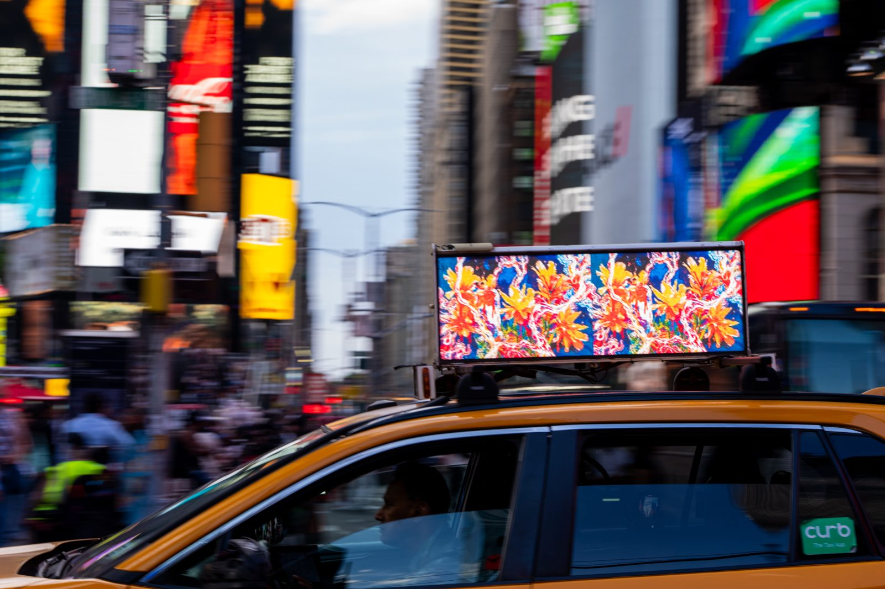
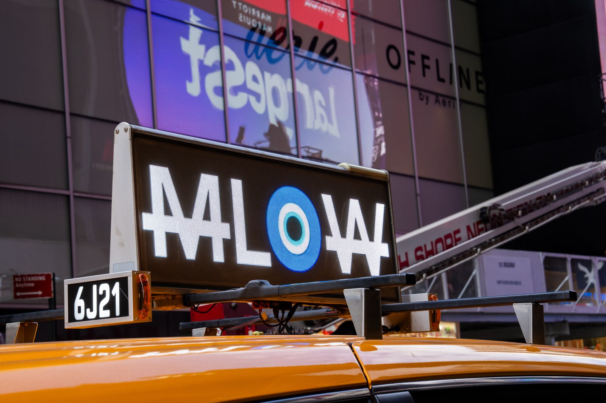
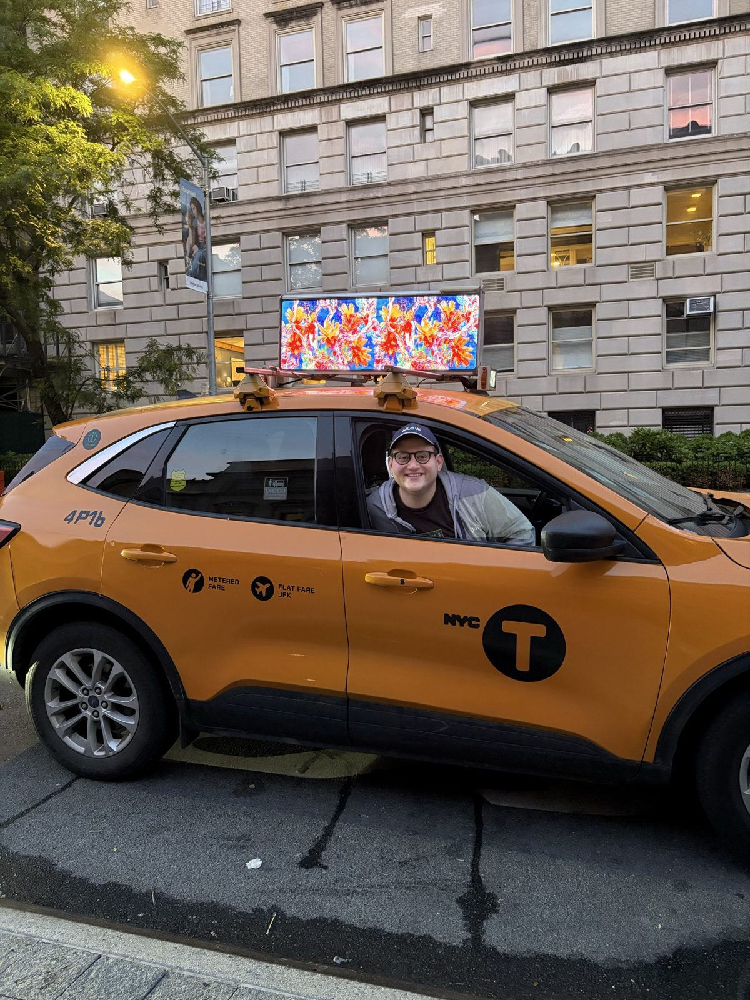
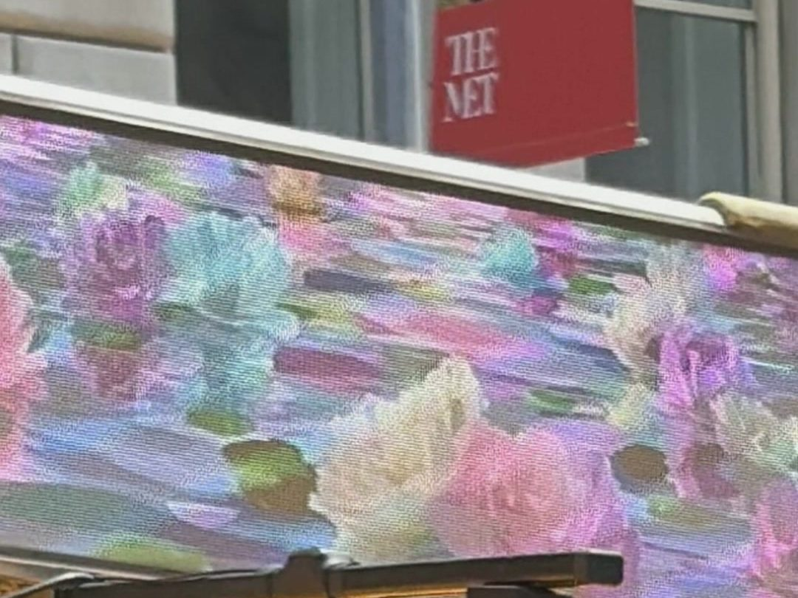
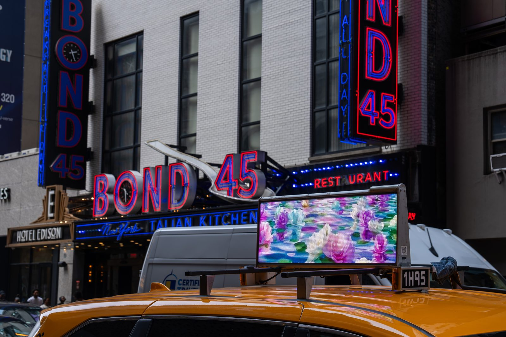
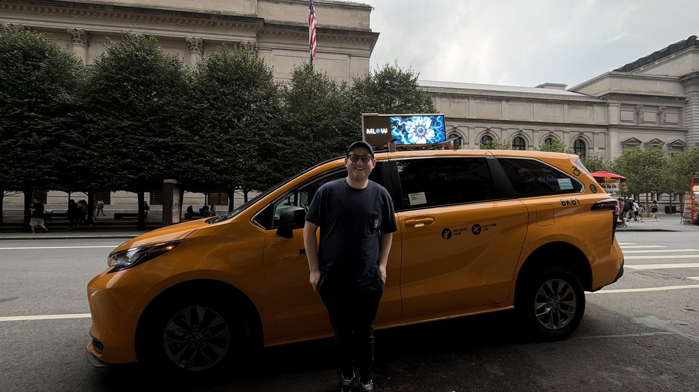
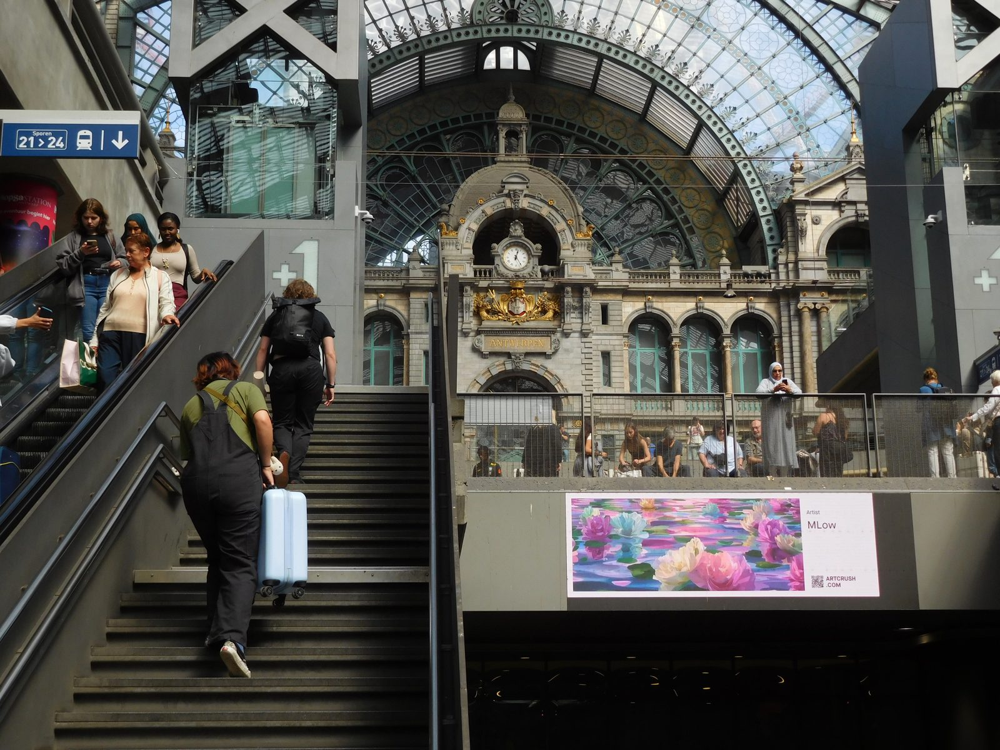
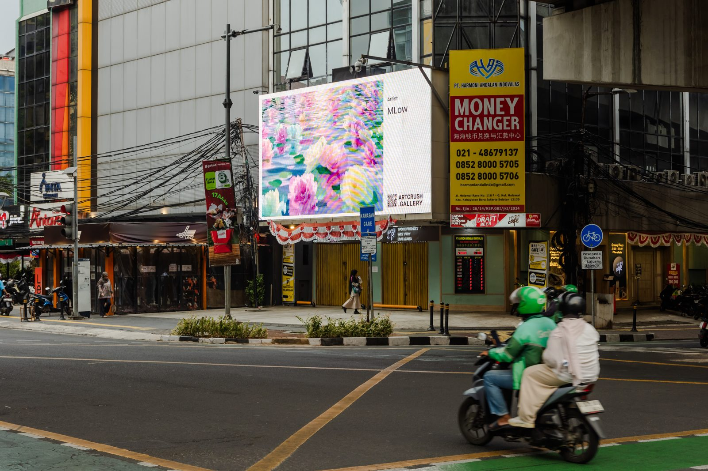
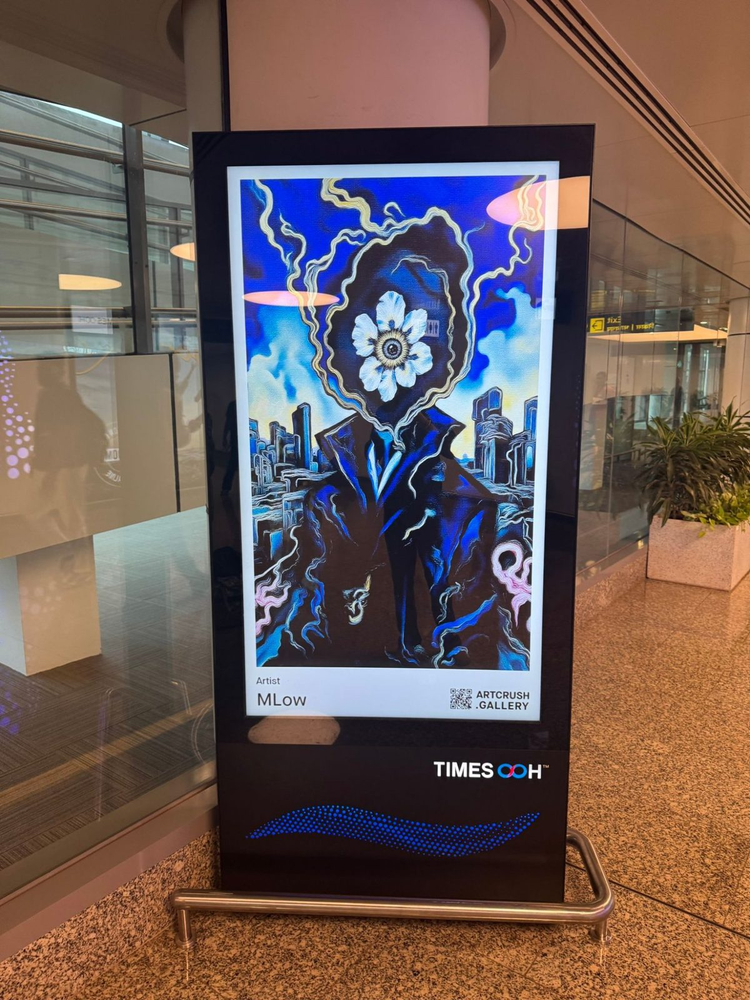
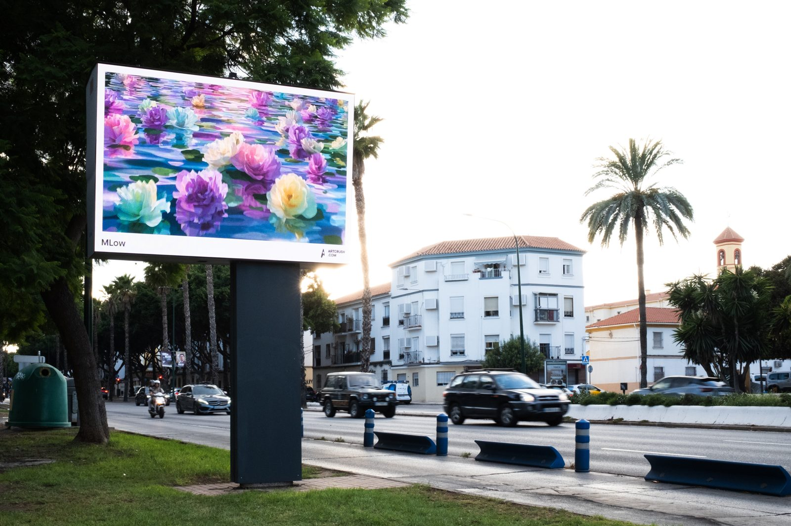
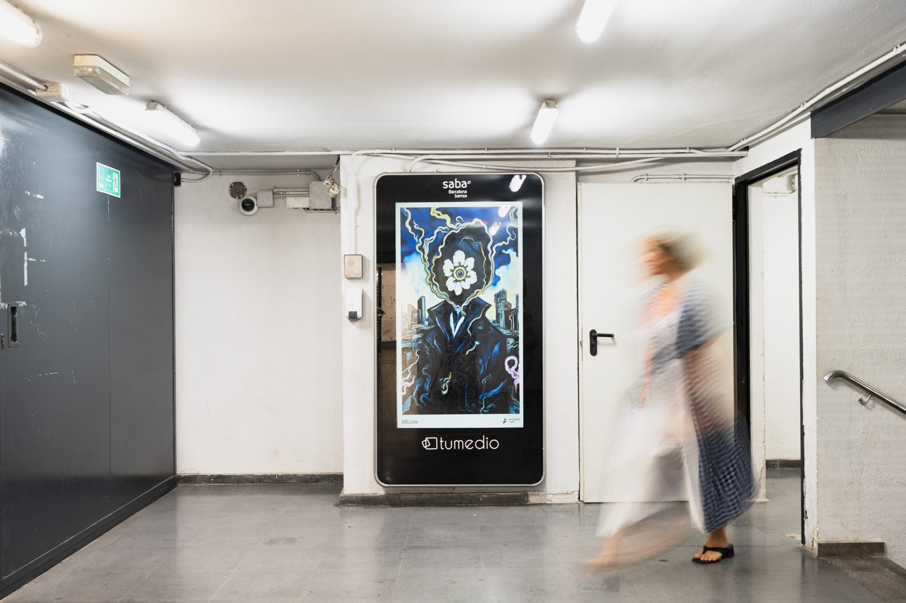
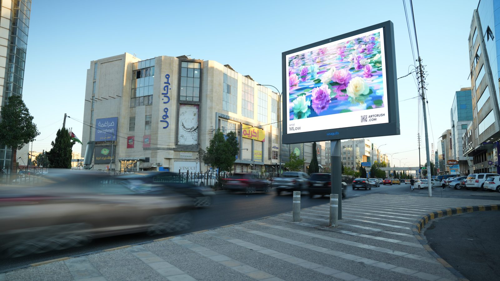